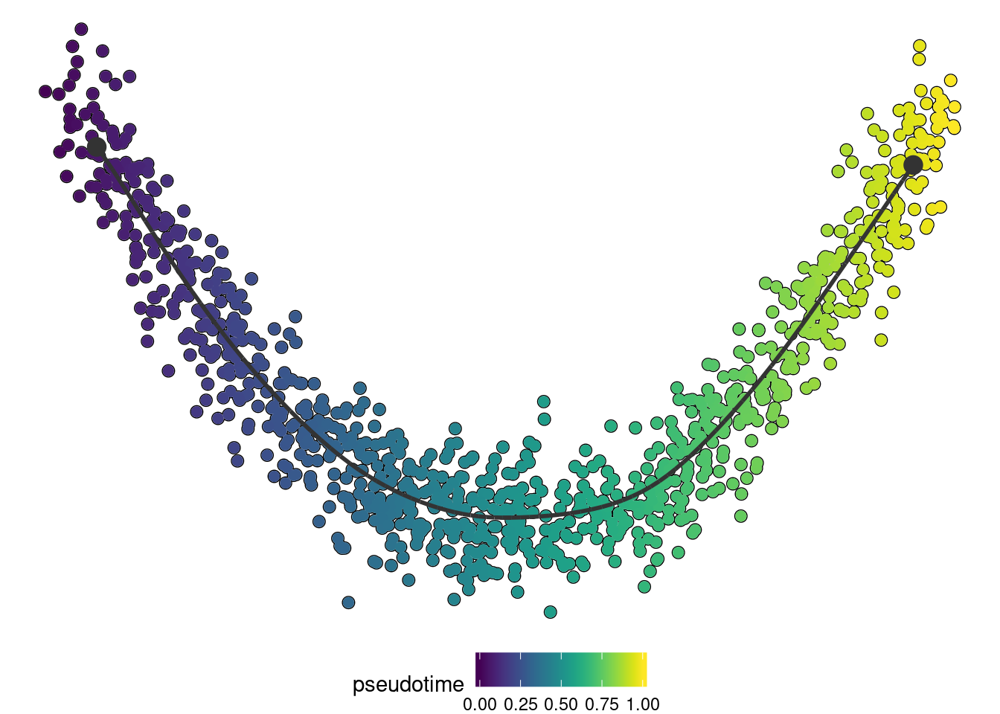

library(dynwrap)An alternative to wrapping a script inside R, is to wrap it using an external script. Because this does not provide any dependency management, this is not really useful for method end-users, but rather as a way to easily develop a TI method and to ultimately step up towards containerised wrapping.
Similarly as a wrapper written in R, you’ll need to provide both a definition (= a definition.yml) and a way to run the methods (= a script).
The definition has the same hierarchical structure as used by the definition() function. A minimal example
method:
id: comp_1
parameters:
- id: component
default: 1
type: integer
distribution:
type: uniform
lower: 1
upper: 10
description: The nth component to use
wrapper:
input_required: expression
input_optional: start_id
You can use our template definition.yml to see all the different possibilities of what can be included in the definition: https://github.com/dynverse/dynmethods/tree/master/template_container . It may also be useful to check out some of the wrappers in dynmethods, e.g.: https://github.com/dynverse/ti_paga/blob/master/definition.yml
A running script reads in the data, creates a trajectory, and again writes the trajectory to a file. To do the loading and writing tasks, we provide helper libraries for R and python: dyncli and dynclipy.
The wrapper script will typically have the following structure:
#!/usr/bin/env Rscript or #!/usr/bin/env pythondataset <- dyncli::main() or dataset = dynclipy.main()dyncli::write_output(trajectory) or trajectory.write_output()A minimal example script for R:
#!/usr/bin/env Rscript
dataset <- dyncli::main()
library(dynwrap)
library(dplyr)
# infer trajectory
pca <- prcomp(dataset$expression)
pseudotime <- pca$x[, dataset$parameters$component]
# flip pseudotimes using start_id
if (!is.null(dataset$priors$start_id)) {
if(mean(pseudotime[start_id]) > 0.5) {
pseudotime <- 1-pseudotime
}
}
# build trajectory
trajectory <- wrap_data(cell_ids = rownames(dataset$expression)) %>%
add_linear_trajectory(pseudotime = pseudotime)
# save output
dyncli::write_output(trajectory, dataset$output)
Make sure this script is executable!
chmod +x run.Rand for Python:
#!/usr/bin/env python
import dynclipy
dataset = dynclipy.main()
import pandas as pd
import sklearn.decomposition
# infer trajectory
pca = sklearn.decomposition.PCA()
dimred = pca.fit_transform(dataset['expression'])
pseudotime = pd.Series(
dimred[:, dataset['parameters']['component']-1],
index = dataset['expression'].index
)
# build trajectory
trajectory = dynclipy.wrap_data(cell_ids = dataset['expression'].index)
trajectory.add_linear_trajectory(pseudotime = pseudotime)
# save output
trajectory.write_output(dataset['output'])
method <- create_ti_method_definition(
"definition.yml",
"run.R"
)
dataset <- dynwrap::example_dataset
trajectory <- infer_trajectory(dataset, method(), verbose = TRUE)## Executing 'comp_1' on 'example'
## With parameters: list(component = 1L),
## inputs: expression, and
## priors :## Loading required namespace: hdf5r## Input saved to /tmp/Rtmp6MbIZN/file7cab7f5eb963/ti
## Running ./run.R --dataset input.h5 --output output.h5
##
## Attaching package: ‘dplyr’
##
## The following objects are masked from ‘package:stats’:
##
## filter, lag
##
## The following objects are masked from ‘package:base’:
##
## intersect, setdiff, setequal, union# install dynplot to plot the output
if ("dynplot" %in% rownames(installed.packages())) {
dynplot::plot_dimred(trajectory, color_cells = "pseudotime" , expression_source = as.matrix(dataset$expression))
}
With the debug parameter, it is possible to enter the script interactively. This makes it easier to develop TI method as you can just load in the input data, and code!
trajectory <- infer_trajectory(dataset, method(), debug = TRUE)## Error: Error during trajectory inference
## ./run.R --dataset input.h5 --output output.h5Wrapping a method inside a script does not have any dependency management, and is therefore only meant for development purposes. To deploy your method to other users, check out the containerisation tutorial!
While using dyncli to load and save the data is the most straightforward when using R and python, it’s also possible to skip these packages and do all the work yourself. Briefly you have to:
--dataset input.h5.If after this you’re still convinced you want to do this, please contact us. We’ll be able to provide some further documentation!